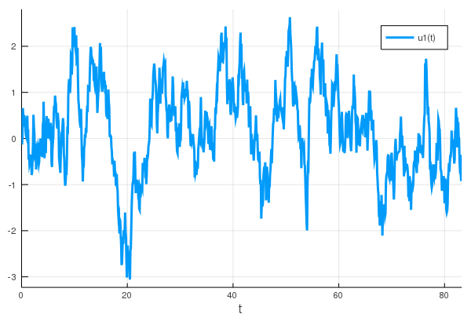

Examples
Create an SGS distribution
One may create an SGS distribution by fitting the distribution to known statistics by the method of moments. For example, to create an SGS distribution with mean zero, a variance and skewness of 1 and a kurtosis of 5, issue:
julia> using SGSDist
julia> d = fit(SGS, 1, 1, 5)
SGS{Float64}(E=0.6236095644623235, b=1.1709106481844573, g=0.48997894350611143)Here, d is an SGS distribution that has been fitted to the moments specified with parameters E, g and b.
By loading the Plots.jl package, one can plot this SGS pdf:
julia> using Plots
julia> x = collect(-6:0.01:6)
1201-element Array{Float64,1}:
-6.0
-5.99
-5.98
-5.97
-5.96
-5.95
-5.94
⋮
5.94
5.95
5.96
5.97
5.98
5.99
6.0
julia> plot(x, pdf.(d, x))

Fit an SGS distribution from data
An SGS distribution may be also be fit from climate data. For example, one may create an SGS distribution by fitting the sample reanalysis time series provided by the function air():
julia> air()
6408-element Array{Float64,1}:
0.67547214
0.8308915
0.19012427
-0.20711477
-0.10181273
0.7421673
0.22026125
⋮
0.3421846
0.044188347
0.2433472
0.4460243
1.4941149
0.49388295
-0.052520715
julia> d = fit(SGS, air())
SGS{Float64}(E=0.36623331624359673, b=0.7133796999284913, g=-1.1648873051087967)
julia> plot(x, pdf.(d, x))
julia> using StatsPlots
julia> hist!(x)
Markov processes
Correlated and additive multiplicative (CAM) noise model
One may create a time series via Markov process that represents the statistics of a given SGS distribution. First, specify the SGS distribution – here we create an SGS distribution with variance and skewness of 1 and (excess) kurtosis of 5.
julia> d = fit(SGS, 1, 1, 5)
SGS{Float64}(E=0.6236095644623235, b=1.1709106481844573, g=0.48997894350611143)We can produce a time series using the CAM1D() function, which corresponds to the one-dimensional correlated additive and multiplicative (CAM) noise model described in Sardeshmukh and Sura (2009). The CAM noise model is able to reproduce non-Gaussian statistics that are seen in climate observations of daily atmospheric variables.
julia> n = 1000 # length of time series
1000
julia> sol = CAM1D(d, n)
retcode: Success
Interpolation: 1st order linear
t: 1001-element Array{Float64,1}:
0.0
0.041666666666666664
0.08333333333333333
0.125
0.16666666666666666
⋮
41.49999999999982
41.54166666666649
41.58333333333315
41.624999999999815
41.625
u: 1001-element Array{Array{Float64,1},1}:
[0.0]
[0.122174]
[0.313727]
[0.477212]
[1.04692]
⋮
[-0.636782]
[-0.309111]
[-0.154719]
[-0.290622]
[-0.290621]
julia> plot(sol)

One may also change the time step, dt, as well as the damping term, λ. Moreover, a seed may be specified in order to reproduce a time series over subsequent runs.
julia> sol = CAM1D(d, n, dt=1/12, λ=0.5, seed=42)
retcode: Success
Interpolation: 1st order linear
t: 1001-element Array{Float64,1}:
0.0
0.08333333333333333
0.16666666666666666
0.25
0.3333333333333333
0.41666666666666663
0.49999999999999994
⋮
82.83333333333299
82.91666666666632
82.99999999999964
83.08333333333297
83.1666666666663
83.24999999999963
83.25
u: 1001-element Array{Array{Float64,1},1}:
[0.0]
[-0.05538507236046933]
[0.3759078513765658]
[0.31482891888314435]
[0.2586995978771357]
[0.006314400534034209]
[0.0819076515551696]
⋮
[0.6914165604620272]
[1.2048828846162347]
[0.6995798768325541]
[0.541755324779944]
[0.5939196502928672]
[0.6785936302181322]
[0.6785940957553153]
julia> plot(sol)
Hasselmann's model
It is also possible to create a Markov process time series using the Hasselmann (1976) climate model, described in:
Hasselmann, K., 1976: Stochastic climate models Part I. Theory. Tellus, 28, 473–485, https://doi.org/10.1111/j.2153-3490.1976.tb00696.x.
The Hasselmann Markov process – which is an AR(1) process – produces a time series that is normally distributed.
julia> n = 1000 # length of time series
1000
julia> sol = Hasselmann1D(n)
retcode: Success
Interpolation: 1st order linear
t: 1001-element Array{Float64,1}:
0.0
0.041666666666666664
0.08333333333333333
0.125
0.16666666666666666
0.20833333333333331
0.24999999999999997
⋮
41.416666666666494
41.45833333333316
41.49999999999982
41.54166666666649
41.58333333333315
41.624999999999815
41.625
u: 1001-element Array{Array{Float64,1},1}:
[0.0]
[0.02634147381570931]
[0.06909671634959474]
[0.311743726899033]
[0.5943736799301251]
[0.4215357023451997]
[0.2506514745054867]
⋮
[-0.7733132505027923]
[-0.8065075584943057]
[-0.762325615339476]
[-0.9280604718015151]
[-1.2373636151238154]
[-1.243929957136598]
[-1.2439305063701647]
julia> plot(sol)
Again one may specify the time step, damping terms and the seed used for the random number generation.
julia> sol = Hasselmann1D(n, dt=1/12, λ=0.5, seed=42)
retcode: Success
Interpolation: 1st order linear
t: 1001-element Array{Float64,1}:
0.0
0.08333333333333333
0.16666666666666666
0.25
0.3333333333333333
0.41666666666666663
0.49999999999999994
⋮
82.83333333333299
82.91666666666632
82.99999999999964
83.08333333333297
83.1666666666663
83.24999999999963
83.25
u: 1001-element Array{Array{Float64,1},1}:
[0.0]
[-0.13005535542166105]
[0.04828669603525988]
[0.6586911660509708]
[0.47664314043490363]
[0.2527905702593072]
[0.5063085613562421]
⋮
[-0.470018895671266]
[-0.6640224731670596]
[-0.6412697125734017]
[-0.8226707386234937]
[-0.9240097641730842]
[-0.3550868399241891]
[-0.3550865369728031]
julia> plot(sol)

Random number generation
Produce a random number or an array of random numbers drawn from the SGS distribution d by invoking rand().
julia> rand(d)
-0.6568019443675626
julia> rand(d, 10)
10-element Array{Float64,1}:
-0.6658576564565255
-0.182584214456065
-0.3849235898350698
-1.8058720924121987
0.08814146377788976
0.4741505815188713
0.20989773773209539
0.37743678587708196
-0.19880370169821895
1.0225965534875916